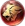
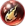
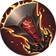
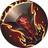
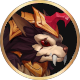
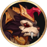
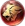
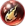

 Leão
 Obsidiana
Obsidiana
 Sacrifício
Sacrifício
 Chama do Dragão
Raios
Milagre
Este é um site feito por fã em homenagem ao Champions Legion!

 

 

 Leão
Obsidiana
Sacrifício
 Chama do Dragão
Raios
Milagre
Orsour é um guerreiro com alto dano. Farme bastante para ficar com vantagem de ouro e explodir inimigos facilmente.
Compre os itens sempre na forma de urso para fortificar essa forma.
Na fase de teamfights Orsour deve agir com base na sua segunda skill da forma de urso. Entre, aplique o efeito de medo, cause muito dano e saia. Como Orsour não builda muita defesa ele deve entrar para causar abates enquanto os adversários ficam imobilizados pelo medo.
Use a primeira na forma humana, use a segunda e se transforme em Urso. Avance com a primeira nessa forma, e use a segunda.Lembre-se sempre de intercalar as habilidades com hits básicos para estourar as marcas da passiva e aplicar dano com o poder da trindade.
Ordem de compra dos itens: Inicie com a faca de caça( ), compre o capacete de patrulheiro(
), compre o capacete de patrulheiro( ). Compre as botas reluzentes e feche o capacete de unicórnio após o poder da trindade. Pode comprar os demais itens na ordem. O capacete pode ser substituído pela capa do profeta, se houver necessidade.
). Compre as botas reluzentes e feche o capacete de unicórnio após o poder da trindade. Pode comprar os demais itens na ordem. O capacete pode ser substituído pela capa do profeta, se houver necessidade.
Ordem de upgrade das habilidades: 3ª → 2ª → 1ª.